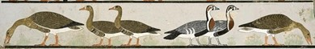

Soeur Wendy Beckett
THỜI THƯỢNG CỔ
Điều lạ lùng là trải qua một thời gian khá dài trước khi hội họa tìm
lại được phẩm chất nghệ thuật của thời đồ đá. Người Ai Cập chú trọng
trước hết tới kiến trúc và điêu khắc, và trong nhiều bức tranh của
họ - nhất là tranh trang hoàng phần mộ - hình vẽ lấn bước màu sắc.
Một vài tác phẩm hoặc một vài mảnh vụn thuộc những nền văn hóa khác
nhau của châu Âu cổ đại còn truyền lại cho chúng ta - văn hóa Minos,
Mycènes và Étrurie. Rồi tới những nền văn minh Hy Lạp và La Mã.
Dường như tất cả những truyền thống của hội họa cổ đại có một nét
chung: hiếm có những tiêu biểu còn lại cho tới ngày nay.
Người Ai Cập quá yêu thế giới trần gian nên không nghĩ rằng những
quyến rũ của thế giới này nhất thiết phải chấm dứt cùng với cái
chết. Họ tin rằng, ít nhất, những người giàu và những người có quyền
lực có thể hưởng thụ trường cửu những lạc thú của cuộc đời nếu hình
ảnh của người quá cố được vẽ lại trên vách phần mộ. Vì vậy, phần lớn
hội họa được dành cho sự an lạc của người chết. Tuy nhiên, ta có thể
tưởng tượng rằng người Ai Cập không cho là cần phải chi những món
tiền lớn để bảo đảm cuộc sống sung sướng ở thế giới bên kia, và họ
đã chọn hội họa vì đó là một phương tiện tiết kiệm được thì giờ và
tiền bạc. Hình thức nghệ thuật này thay thế một cách có lợi cho nghệ
thuật điêu khắc là thứ tốn kém hơn. Tuy nhiên, phải ghi nhận rằng
những bích họa lộng lẫy không chỉ được dành riêng cho các phần mộ.
Người Ai Cập giàu có trang hoàng nhà họ băng bích họa rực rỡ và có
giá trị, mà tiếc thay ngày nay chỉ còn sót lại mót số mảnh vụn.
TRANH TRANG HOÀNG PHẦN MỘ AI CẬP CỔ ĐẠI

Ngỗng Meidum (Meidum Geese), khoảng năm 2610 - 2590 TCN Beni Suef,
Ai Cập
Một trong những hình ảnh gây ấn tượng mạnh nhất của những phần mộ Ai
Cập có lẽ là hình ảnh Những con ngỗng ở Meidoum (hình 2), với ba con
ngồng đường bệ trên ngôi mộ của vợ chồng Néfermaat, con trai của
Snéfrou, pharaoh đầu tiên thuộc triều đại IV, có niên đại từ 2000
năm trước T.L. Ba con ngỗng này chỉ là một chi tiết của một đường gờ
vẽ trên phần mộ ở thành cổ Meidoum, nhưng chúng đã chứng tỏ sức sống
và tiềm năng của phong cách hội họa tương lai. Một bức tranh khác, ở
phần mộ của Ramose, hình dung những người khóc mướn trong một đám
tang. Ramose là thượng thư dưới hai triều Pharaông thuộc triều đại
thứ XVIII, Aménophis III và Aménophis IV (Akhenaton). Hình ảnh những
người đàn bà không có bóng nổi và được cách điệu, nhưng những cánh
tay đưa cao lên tỏ rõ sự đau đớn sâu sắc của họ.
Đối với người Ai Cập cổ đại, cái "bất hoại" là hơn cả, đó là quan
niệm về một thực tại bất biến, thường hằng. Nghệ thuật của họ không
kể tới những thay đổi bề ngoài, và ngay cả những quan sát chính xác
của họ về thiên nhiên (hiển nhiên là được vẽ lại theo trí nhớ) cũng
được tiêu chuẩn hóa nghiêm ngặt về mặt hình thể, và thường trở thành
những ký hiệu. Sự khéo léo về kỹ thuật và sự tôn trọng rõ rệt của họ
đối với hình thể tự nhiên chứng tỏ rằng tính chất phi thực tế của
các hoạt cảnh không phải do một quan niệm "ấu trĩ" nào đó, mà đúng
ra nó là hậu quả trực tiếp của chức năng tri thức trong nghệ thuật
của họ. Mỗi chủ đề được trình bày dưới góc độ cho phép nhận diện nó
một cách chắc chắn, và tầm vóc của nhân vật cho biết địa vị trong hệ
thống tôn ti. Kết quả là ta có một diện mạo theo lối giản đồ, gần
như là đồ thị. Sự chú trọng tới tính sáng sủa và sự thể hiện tỉ mỉ
đó được áp dụng cho tất cả mọi chủ đề, vì vậy mà đầu người gần như
luôn luôn được cho thấy bán diện, mặc dầu mất thì được thể hiện trực
diện. Vì lẽ đó, không có luật phối cảnh trong tranh Ai Cập, tất cả
được thấy theo hai chiều.
BÚT PHÁP VÀ BỐ CỤC
Phần lớn các bích họa Ai Cập, như trong Cảnh săn chim nước trên mộ
một nhà quý tộc ở thành Thèbes, được thực hiện theo phương pháp
tranh nề khô, màu thủy noãn được tô lên hồ khô, trái với phương pháp
tranh nề ớt khi bức tranh được vẽ lên hồ ướt. Mặc dầu hệ động vật
vùng đầm lầy có cỏ chỉ và con mèo săn của Nebamun được vẽ vô cùng
chi tiết, hoạt cảnh này vẫn là một hoạt cảnh lý tưởng hóa. Nhà quý
tộc đứng trong thuyền, tay phải nắm ba con chim vừa săn được, tay
trái cầm gáy. Vợ ông mặc một cái áo chế tạo công phu, đầu đội mũ tẩm
hương thơm, tay cầm một bó hoa. Con gái của Nébamun ngồi giữa hai
chân ông, thân hình nhỏ bé, đang hái một hoa sen (ở đây, ta thấy tầm
vóc các nhân vật một cách ước lệ tùy theo địa vị xã hội, như được
chỉ rõ ở đoạn trên). Bức tranh nguyên là một phần của một tác phẩm
lớn hơn, cũng mô tả cảnh đi câu.
NHỮNG ƯỚC LỆ TRONG CÁCH THỂ HIỆN CỦA NGƯỜI AI CẬP
Trong nghệ thuật Ai Cập, sự thể hiện gương mặt người tuân theo "quy
tắc cân đối", một hệ thống khung ô hình học cứng nhắc bảo đảm sự lặp
lại chính xác của cái hình thể Ai Cập lý tưởng, bất chấp hình thể đó
ở vị trí nào. Hệ thống vững chắc này ấn định một cách chính xác
những khoảng cách giữa các phần của cơ thể, cơ thể thì được chia
thành mười tám đơn vị bằng nhau chiếm những vị trí tương đối với
những điểm cố định của khung ô. Hệ thống này cũng ấn định bề rộng
chính xác của một bước chân và khoảng cách giữa hai bàn chân (cả hai
bàn chân được nhìn từ mặt trong) của một người đứng thẳng. Thoạt
tiên, nghệ sĩ vạch trên bản vẽ một khung ô có kích thước cần thiết,
rôi đặt nhân vật vào khung ô đó cho tương xứng. Một bản vẽ bằng gỗ
thuộc Triều đại XVIII cho thấy Pharaoh Thutmose III được vẽ trên một
khung ô loại này.
Người Ai Cập cũng vẽ màu các tượng điêu khắc. Tượng Đầu Néfertiti,
hoàng hậu của pharaoh Akhenaten, bằng đá vôi, được tô màu rất đẹp và
được tìm thấy trong cơ sở đổ nát của một nhà điêu khắc, có lẽ là
khuôn mẫu của xưởng này. Với một vẻ đẹp sắc sảo, bức tượng phô bày
một vẻ trầm tư và đáng yêu, và cho thấy sự buông lỏng những ước lệ
cứng nhắc vẫn chi phối nghệ thuật Ai Cập: Akhenaten đã đoạn tuyệt
với truyền thống. Trong giai đoạn trị vì của vị Pharaoh này, tranh
và tượng cho thấy một vé dáng yêu và tính độc đáo êm dịu.
NHỮNG NỀN VĂN HÓA VÙNG BIỂN ÉGÉE THUỘC ĐẠI BỒ ĐỒNG
Nền văn minh Minos thuộc đại đồ đồng (3000-1100 tr. T.L), lây theo
tên vua Minos huyền thoại, là nền văn minh đầu tiên phát triển ở
châu Âu. Quê hương của nền văn minh này là đảo Crète nhỏ bé trong
biển Egée, nằm giữa Hy Lạp và Thổ Nhĩ Kỳ. Xã hội của nó phát triển
ít nhiều song song với xã hội Ai Cập lân cận ở châu Phi. Mặc dầu gần
gũi và có một số ảnh hưởng chung nhất định, hai nền văn hóa Ai Cập
và Minos vẫn phân biệt nhau rõ rệt, nhưng nền văn hóa Minos hẳn phải
có ảnh hưởng đối với nghệ thuật Hy Lạp cổ đại. Đảo Crète là trung
tâm của khu vực biển Egée, cả về mặt văn hóa lẫn địa lý. Nền văn
minh của quần đảo Cyclades cũng phát triển song song với văn minh
đảo Crète. Những thần tượng của nền văn minh quần đảo Cyclades có
hình dạng gần như thuộc thời đại tân thạch khí, hoàn toàn trần trụi
nhưng còn giữ được cái ma lực của thần vật. Lạ lùng thay, những thần
tượng đó báo hiệu nền nghệ thuật trừu tượng của thế kỷ chúng ta, vì
thân thể con người được nhìn theo những yếu tố hình học, với một sức
mạnh hoang dã cường liệt dẫu rằng có chừng mực và được kiểm soát
bằng đường nét thẳng mạnh mẽ.
NGHỆ THUẬT MINOS VÀ MYCÈNES
Nghệ thuật Minos (hay Crète) thể hiện rộng rãi qua tượng và đồ gốm
men màu, và chỉ bắt đầu 1500 năm trước T. L, trong "thời kỳ các đền
đài" mới xuất hiện các bức tranh mà ngày nay chỉ còn lại vài mảnh
vụn. Mặc đầu ta có thể ghi nhận một ảnh hưởng nhất định của phương
pháp cách điệu hóa của người Ai Cập - như trong việc lặp lại các
hình người theo hình thức giãn đồ chẳng hạn - nhưng cách thể hiện
của nghệ sĩ Minos cho thấy tính cách tự nhiên và mềm dẻo không có
trong nghệ thuật Ai Cập. Dân Minos lấy cảm hứng từ thiên nhiên, và
nghệ thuật của họ chứng tỏ một chủ nghĩa tự nhiên đáng kinh ngạc. Đó
là nền văn minh của những nhà hàng hải, và các bức tranh phản ánh
một sự hiểu biết về đại dương và các loài thủy tộc, như cá heo chẳng
hạn. Thí dụ điển hình được tìm thấy trong các cuộc khai quật ở cung
điện Cnossos dầu thế kỷ 20. Những nghệ sĩ nhào lộn trên lưng bò mộng
cũng là một chủ đề quen thuộc, có lẽ có liên quan với tôn giáo của
dân Minos. Một tác phẩm khác trong hoàng cung Cnossos, thể hiện một
thanh niên nhảy trên lưng một con bò mộng, là một trong những bức
tranh được bảo tồn tốt nhất, mặc dầu không nguyên vẹn. Khi những
mảnh rời rạc được ghép lại với nhau, ta thấy có ba nghệ sĩ nhào lộn:
hai thiếu nữ có nước da sáng và một thanh niên đa sẩm. Đó là những
trường đoạn náo nhiệt. Người con gái ở bên trái bám vào cặp sừng con
bò mộng, chuẩn bị nhảy lên, người đàn ông đang nhào lộn, và cô thiếu
nữ bên phải vừa rơi xuống và lấy thăng bằng, hai tay giăng ra, như
các vận động viên thể dục hiện đại.
Nền văn hóa thời đại đồ đồng của Hy Lạp ở đất liền, tức nền văn minh
Mycènes, kế tục nền văn hóa cổ của đảo Minos, xuất hiện khoảng năm
1400 tr T.L. và trở thành nền văn hóa vượt trội hơn hết. Lịch sử và
những truyền thuyết của nền văn minh này là cái nền cho những truyện
kể của thi hào Hy Lạp Homère (850 tr T.L), mà những thiên anh hùng
ca như Iliade và Odyssée phản ánh thời đại "hào hùng", thời kỳ cuối
cùng của nền văn minh Mycènes. Một trong những hình ảnh gây xúc động
nhất của nghệ thuật Mycènes là chiếc mặt nạ của người chết có một
thời được cho là của vua Agamemnon, người mà theo Homère là lãnh tụ
tối cao của người Hy Lạp trong cuộc chiến thành Troie. Điều chắc
chắn duy nhất là chiếc mặt nạ này được tìm thấy ở một trong các phần
mộ hoàng gia thuộc thời đại Mycènes của thế kỷ 16 tr T.L. Nó cho
thấy tính vĩ đại trong cách nhìn của người Mycènes về con người.
Biểu cảm một cách tuyệt vời, đó là sự mô tả có tính tiểu tượng về ý
nghĩa của con người.
Những mảnh vụn của các bức tranh Mycènes tìm được ở hai địa điểm ở
Hy Lạp (Tirynthe và Pylos) có thể là thuộc một loạt những bích họa
đồ sộ. Những tranh tưởng Mycènes và Minos không phải là bích họa
theo nghĩa hẹp, mà là, như tranh tường Ai cập, chúng được thực hiện
bằng cách tô màu thủy noãn trên hồ khô. Chủ đề của các bích họa bao
gồm những hoạt cảnh hàng ngày cũng như cảnh thiên nhiên. So với nghệ
thuật Minos, nghệ thuật Mycènes khá trang trọng. Hai truyền thống đó
tạo nên cái nền cho nền nghệ thuật Hy Lạp xuất hiện sau này.
Văn minh Mycènes sụp đổ khoảng 1100 năm trước T.L. Sự suy tàn của nó
đánh dấu sự chấm dứt thời đại đồ đồng ở Hy Lạp. Rồi tới "thời kỳ tăm
tối" kéo dài từ 100 tới 150 năm, thời kỳ để lại rất ít chỉ dẫn về
nền văn hóa vùng biển Egée. Thế là thời tiền sử chấm dứt để nhường
chỗ cho thời lịch sử thành văn, và vào năm 650 tr T.L, Hy Lạp cổ đại
được coi như là nền văn minh tiến bộ nhất châu Âu.
HÌNH ẢNH MỚI CỦA NƯỚC Hy Lạp
Như các tiền nhân đảo Crète, người Hy Lạp không coi trọng lăng mộ
của mình lắm như người Ai cập. Nếu họ đã để lại cho chúng ta một số
tượng nhỏ bằng đồng rất đẹp, thì những bức tranh của họ vốn được các
văn nhân ca tụng những phẩm chất tuyệt vời gần như hoàn toàn mất
hết, có lẽ là vì người Hy Lạp vẽ nhiều nhất trên bảng gỗ là những
thứ bị thời gian hủy hoại trái ngược với người Ai Cập, người Minos
và Mycènes, vẽ tranh trên tường.
Nhà văn La Mã Pline Già (23 - 79) mô tả ti mì các bức tranh Hy Lạp
và thế giới cổ đại. Tài liệu của ông có ảnh hưởng lớn với các thế hệ
sau, và ông là người cung cấp tư liệu duy nhất cho chúng ta. Nhờ
những tác phẩm còn giữ được, người ta có thể đánh giá tính xác thực
của những lời mô tả đối với các trường phái hội họa. Hội họa Hy Lạp
đã mất, chúng ta chỉ có thể tin cậy nơi những phê phán của Pline.
Nghệ thuật khá thứ yếu và nhất là thực dụng nơi những chiếc bình có
trang trí dù sao cũng cho phép chúng ta có một cái nhìn bao quát về
vẻ đẹp của hội họa Hy Lạp.
Từ "bình" được dùng ở thế kỷ 18 để chỉ những món đồ gốm của Hy Lạp
cổ đại có thể gây hiểu lầm. Bình Hy Lạp được chế tạo cho mục đích
thực dụng. Người thợ gốm sáng tạo nhiều hình thể khác nhau, những đồ
đựng thực phẩm, chén để uống, chai lọ để đựng dầu thơm và chóe để
đựng chất lỏng (rượu, nước) dùng trong các cuộc lễ.
Trang trí trên những chiếc bình Hy Lạp cho ta thấy sự quan tâm về cơ
thể học và đối với con người. Con người trở thành đối tượng chính
của nghệ thuật và triết học Hy Lạp. Ta nhận thấy có sự khước từ
những ảnh hưởng Ai Cập và những công thức rập khuôn của họ về cách
thể hiện thế giới. Một cách thức mới để xem xét nghệ thuật đã xuất
hiện, một cách thức đòi hỏi sự tham gia của con mắt và trí tuệ.
BÚT PHÁP HỘI HỌA TRÊN NHỮNG CHIẾC BÌNH HY LẠP
Việc trang trí những chiếc bình có lẽ là một nghệ thuật thứ yếu,
nhưng nhiều nghệ sĩ lớn đã dành thì giờ cho việc đó. Họa sĩ Exekias
người Athènes, sống khoảng năm 535 trước T.L. đã ký tên ít nhất trên
hai trong những chiếc bình đen của mình, và bút pháp của ông cùng
với thị tứ và sự cân bằng hài hòa của ông được nhận ra ngay. Tác
phẩm của Exekias rất quan trọng vì nó cho thấy chiều hướng mà nghệ
thuật biểu thị sẽ theo, chuyển mình từ cách thể hiện tượng trưng và
theo lối chữ tượng hình cổ Hy Lạp sang cách mô tả hiện thực. Ta có
thể nhận ra khuynh hướng này trong cách ông thực hiện cánh buồm của
chiếc thuyền trong chiếc chén kylix tuyệt đẹp. Bức tranh có tên
Dionysos trên thuyền. Thần rượu Dionysus năm trong thuyền, mang tới
cho con người bí mật của thứ nước uống quý giá. Những dây nho tượng
trưng quấn quanh cột buồm và mang đầy trái, vươn lên trời cao. Đây
là sự sử dụng tuyệt diệu hình thể tròn của chiếc chén. Chiếc thuyền
với cánh buồm sáng chói uy nghi lướt đi trên thế giới màu hồng và
cam của cõi trời và mặt đất, trong đó những con cá heo đùa giỡn xung
quanh vị thần trong một quang cảnh lung linh và cho ta một cảm giác
phi thường về sự sung mãn. Các họa sĩ thích kể chuyện, và nhiều
chiếc bình vẽ những cảnh trong sử thi Iliad và Odyssee của Homère.
Ta tìm được loại bình "tự sự" này ở thời kỳ trước Homère và cho tới
thời kỳ cổ điển.
Để thưởng thức trọn vẹn nền hội họa trên các chiếc bình Hy Lạp, ta
phải xem hình ảnh và chiếc bình là một Một nhân vật quan trọng trong
anh hùng ca Odyssée là Pallas Athéna, thần bảo hộ của thành Athènes,
hiện ra trên một chiếc chóe có nắp của một nghệ sĩ vô danh mà các
học giả mệnh danh là "Họa sĩ ở Berlin". Đường cong sẫm màu và bóng
loáng của chiếc chóe cho ta cảm giác là nữ thần tìm cách trốn tránh
cái nhìn của chúng ta nhưng dù sao cũng bằng lòng để cho ta chiêm
ngưỡng vẻ rực rỡ uy nghi của mình. Nữ thần đưa một bầu rượu cho
Hercule, ở phía bên kia chiếc chóe; mỗi người ở trong một không gian
bất khả xâm phạm nhưng vẫn gần gũi. Tác phẩm được thể hiện chừng mực
và trang trọng tuyệt vời, vừa đơn giản vừa phức tạp.
Chiếc chóe này là một thí dụ về phương pháp hình diện đỏ được phát
minh vào 530 trước T. L và kế tục phương pháp hình diện đen. Với kỹ
thuật này, nghệ sĩ họa nền đen bao quanh các hình diện, chừa màu đỏ
của đất sét lại để tạo các hình điện mà các chi tiết cơ thể được vẽ
sau. Những hiệu quả có tính hiện thực nhất có thể đạt được, và những
hoạt cảnh mô tả trên các bình càng ngày càng phức tạp và nhiều tham
vọng hơn.
Tiêu biểu cho phương pháp mới này là trang trí bên trong một chiếc
chén do họa sĩ của lò gốm Brygos thực hiện. Mặc dầu chủ đề không hấp
dẫn óc tưởng tượng lắm (một phụ nữ giữ đầu của một người đàn ông
đang nôn), nhưng các hình diện được trình bày một cách tế nhị và
chừng mực. Đặc biệt là chiếc áo của người đàn bà tạo cho hoạt cảnh
một vẻ duyên dáng dịu dàng.
SỰ THỂ HIỆN CƠ THỂ CON NGƯỜI
Cách thể hiện cơ thể con người của người Hy Lạp có một ảnh hưởng
trực tiếp tới nghệ thuật La Mã và tới cả nghệ thuật phương Tây sau
này. Phần lớn tranh Hy Lạp đã mất nên chỉ có điêu khắc cho chúng ta
vạch lại con đường tiến hóa của hình khỏa thân. Những bức tượng Hy
Lạp đầu tiên, như bức Couros lấy cơ sở hệ thống khung ô của người Ai
Cập cổ (couros nghĩa là chàng trai trẻ, và, đối với ngành điêu khắc
đương thời, là tượng của một thanh niên đứng khoa thân). Dần dần,
đường nét mềm mại hơn, như ta thấy ở tượng Chàng thiếu niên của
Kritios. Tên của nhà điêu khắc này đã thành biểu tượng cho một phong
cách riêng. Ít lâu sau, xuất hiện hệ thống cơ bắp có tính hiện thực
và chuyển động của cơ thể, những nét đặc trưng cho các bức tượng cổ
của thế kỷ 5 tr. T.L, như bức tượng Người ném dĩa, một mô phỏng của
người La Mã theo một bức tượng nguyên bản của nhà điêu khắc Hy Lạp
Myron.
HỘI HỌA CỦA NGƯỜI ÉTRURIE
Nền văn minh bí ẩn của người Étrurie xuất hiện trên bán đảo Ý đại
lợi vào thời kỳ mà văn minh Hy Lạp đã lan tràn ở miền nam Ý vào thế
kỷ 8 tr. T.L. Trước đây người ta tin rằng người Etruria từ Tiểu Á
tới, nhưng ngày nay người ta nghĩ rằng nền văn minh của họ đã phát
triển trên đất Ý.
Chịu ảnh hưởng của nghệ thuật Hy Lạp, tuy vậy nghệ thuật Etruria đã
giữ được phong cách riêng, rất được người Hy Lạp tán thưởng. Một số
tác phẩm sơ khai, như bích họa trong mộ của gia đình Léopard ở
Tarquinia, là những bức tranh sống động và đầy màu sắc. Những người
đàn ông, có lẽ đang nhảy múa, tay cầm chén rượu, một chiếc sáo đôi
và một chiếc đàn lyre.
Tuy nhiên, phần lớn những tác phẩm còn lại cho tới ngày nay thì u ám
hơn nhiều, diễn tả ý thức về thiên nhiên bất kham trong cuộc sống,
với tất cả ý nghĩa bao hàm trong đó.
Trong số những bức tranh tường đồ sộ của người Étrurie đồng thời với
thời kỳ cổ điển Hy Lạp, có bức bích họa màu Điệu vũ tang lễ trong
phần mộ của Ruvo di Puglia.Đám người nhảy múa tiến tới một cách mạnh
mẽ tạo vẻ tương phán mê hồn với những người đàn bà khóc lóc ở phần
mộ của Ramose mà ta đã biết. Những người đàn bà Ai Cập than khóc sự
mất mát một đời người trong khi đó người Étrurie khóc cho một định
mệnh không thể tránh.
HỘI HỌA CỦA HY LẠP CỔ
Họa sĩ Hy Lạp nổi bật nhất ở đầu thời kỳ cổ điển (500 - 450 tr T.L)
là Polygnote, người đầu tiên hiến cho hội hoa sự sống động và cá
tính. Không một bức tranh nào còn lưu lại, nhưng Pline đã để lại
những lời mô tả các bức tranh đó Bức tranh Hy Lạp quan trọng nhất ở
thế kỷ 4 tr. T.L còn giữ lại được là bức Bắt cóc Persephone dùng
trang trí trường của một ngôi mộ nằm gần ngôi mộ của Philippe II,
vua Macédoine; ông mất năm 336 tr. T.L. Đầy sinh khí và tính tự
nhiên của nghệ thuật đương thời, hoạt cảnh cảm động này cho biết
người Hy Lạp giải thích các mùa như thế nào. Perséphone, con gái của
Demeter, nữ thần Phì nhiêu, bị Hades bắt cóc và trở thành Nữ hoàng
Âm Phủ. Mỗi mùa xuân nàng lại trở lên trần gian. Sự tuần hoàn của
các mùa nò ra với bức tranh này, và huyền thoại sống mãi với hình
ảnh đó.
NGHỆ THUẬT TRONG THẾ GIỚI HY LẠP
Khi qua đời, Alexander Đại đế (356 - 323 tr. T.L) đã mở rộng đế quốc
của mình tới tận Trung Đông với cuộc chinh phục Ai Cập và Ba Tư, kẻ
thù truyền kiếp của Hy Lạp. Sau đó, đế quốc của ông bị các tướng
lãnh chia cắt thành một số quốc gia độc lập, trong mỗi quốc gia phát
triển một nền văn hóa mới đa tạp, kết hợp giữa văn minh phương Đông
và phương Tây. Nền văn hóa được gọi là của thế giới Hy Lạp đó
(hellénistique) ngự trị lâu dài trong vùng Địa trung hải sau thời
toàn thịnh của Đế quốc La Mã. Trung tâm của nó là Athènes, nhưng
nhiều trung tâm quan trọng khác do các vua chúa Hy Lạp trị vì và
ngôn ngữ Hy Lạp được dùng vẫn tồn tại ở Syria, Ai Cập và Tiểu Á. Một
bức tranh khảm La Mã có tên là Trận chiến giữa Alexander và Darios
được tìm thấy ở Pompéi và là một bản sao của một bức tranh Hy Lạp.
Bức tranh mô tả Trận Issos giữa Alexander và vua Ba Tư Darius III
vào năm 383 tr. T.L. Cảnh tượng bạo liệt và náo nhiệt, và nghệ sĩ đã
phô bày một kỹ thuật công phu làm cho bức tranh có một tác động mãnh
liệt (họa sĩ đã biết tác dụng của phép phối cảnh).
Trong nền văn hóa của thể giới Hy Lạp, người ta đã sớm thấy xuất
hiện sự bận tâm về "nghệ thuật vị nghệ thuật". Ảnh hưởng phương Đông
đã tạo ra một thứ nghệ thuật có tính trang trí hờn, đôi khi lộng
lẫy, những nhân tố tôn giáo lui vào hậu diện và được thay thế bằng
các hoa viên (những tranh phong cảnh đầu tiên), tỉnh vật, chân dung
và cảnh sinh hoạt thường ngày. Khuynh hướng này, mà các sử gia gọi
là "phá cách", "dị điển" một cách lạ lùng, đã trở thành rất phổ biến
đến nỗi Pline đã phải viết rằng nghệ thuật hiện diện ở khắp nơi,
trong tiệm thợ cạo hoặc thợ giày cũng như trong các cung điện.
Nghệ sĩ tìm kiếm trước hết sự trung thành với thực tại, và họ mô tả
những cảnh tượng thảm thương và thường là dữ đội. Bút pháp của họ
làm nhớ lại truyền thống văn học sống động, đầy màu sắc của thi hào
La Mã Virgile. Một điển hình đầy ấn tượng của triết lý trong nghệ
thuật Hy Lạp ở thế kỷ 1 sau T.L là quần thể điêu khắc Laocoon. Quần
thể này miêu tả một cảnh trong tác phẩm Eneide của Virgile: một tăng
lữ tên Laocoon và hai con trai bị hai con quái xà giết chết. Laocoon
đã bị các thần linh trừng phạt vì đã tìm cách ngăn cản dân thành
Troie đưa con ngựa gỗ vào thành. Dầu đây là tượng điêu khắc, tác
phẩm này cho ta một cái nhìn bao quát về diện mạo có thể đã có của
nền hội họa trong thế giới Hy Lạp.
Quần thể tượng được khám phá năm 1506 và đã gây ảnh hưởng mạnh mẽ
đối với nhiều nghệ sĩ thời Phục hưng, trong đó có Michel Ange. Ông
đã gọi đó là "phép lạ phi thường của nghệ thuật". Trong số những
người lấy cảm hứng từ bức tượng này có Le Greco. Ông dã vẽ ba bức
tranh kể lại chuyện của Laocoon.
HỘI HỌA TRONG ĐẾ QUỐC LA MÃ
Các bức tranh Hy Lạp tiếp tục gây ảnh hưởng mạnh đối với các họa sĩ
sau thời kỳ Hy Lạp rất lâu. Theo các sử gia, thời kỳ Hy Lạp chấm dứt
vào năm 31 tr. T.L, năm diễn ra trận chiến Actium. Ít lâu sau trận
này, nền cộng hòa La Mã nhường chỗ cho Đế chế. Đế quốc La Mã đã trở
thành sức mạnh hàng đầu của thế giới phương Tây trong hơn ba thế kỷ.
Các nền hội họa trong thế giới Hy Lạp lạp còn sống sót suốt thời đại
La Mã và nhiều bức tranh theo phong cách này là những bản sao được
các nghệ sĩ La Mã thực hiện. Những bức tranh La Mã ở thế kỷ 1 cho
thấy khuynh hướng tự nhiên còn chưa được biết tới, một phẩm chất trữ
tình và có tính nhạy cảm vang động. Những đặc tính này đặc biệt có
mặt trong bích họa với bút pháp hầu như hiện đại ở thành phố
Stabies, bức Nữ thần Flore hay mùa Xuân. Người phụ nữ trẻ đi ra xa
một cách khoan thai, với vẻ yêu kiều hư ảo. Ta khó nhìn được mặt
người mẫu, nhưng ta có thể đoán được nhan sắc phi thường của nàng
phản ánh trong cái vẻ mềm mại của những đóa hoa nàng hái. Nàng mờ ảo
trong tấm màn sương, thoát khỏi cái nhìn của chúng ta, để lại cho
chúng ta sự nuối tiếc ngậm ngùi vì không thể chiêm ngưỡng những tác
phẩm nghệ thuật mong manh khác, minh họa một cách tuyệt vời nền hội
họa của thời kỳ đó và ngày nay đã vĩnh viễn biến mất.
TRANH TƯỜNG VÀ ẢO ẢNH
Thành phố lớn Pompéi cho chúng ta một số lớn điển hình về tranh La
Mã, mặc dầu nhiều tranh trong số đó chắc chắn là tác phẩm của các
nghệ sĩ ở khắp nơi trong Đế quốc. Chịu ảnh hưởng nặng của hội họa Hy
Lạp, mà người La Mã thán phục và sao chép cũng nhiều như điêu khắc
Hy Lạp, những bức tranh đó không phải luôn luôn đạt tới sự hoàn hảo
của những tuyệt phẩm của những họa sĩ tài năng hơn, nhưng dù sao
chúng cũng có nhiều nét quyến rũ. Những mảnh vỡ mà chúng ta còn có
thể chiêm ngưỡng chứng minh cho sự quan tâm của người La Mã đối với
loại hình trang trí nội ốc này.
Chủ đề phong cảnh với tính cách là phong cảnh có lẽ có nguồn gốc Hy
Lạp. Các họa sĩ La Mã có lẽ cũng lưu truyền một truyền thống Hy Lạp
khi trang hoàng nội ốc bằng những bức vẽ giống như thật hay bằng
cách ốp đá hoa nhiều màu. Kiểu trang trí này được tìm thấy trong
cung điện của César trên đồi Palatin. Điều phân biệt nghệ thuật La
Mã với những ảnh hưởng Hy Lạp là sự chú trọng của nghệ thuật đó đối
với giai thoại, địa điểm, các gương mặt và sự kiện lịch sử. Các nghệ
sĩ cho không gian một vị trí đặc biệt (điều này cho ta một cái nhìn
bao quát và đáng chú ý về khuynh hướng và tinh thần La Mã). Họ cũng
biết mở ra không gian trên một bức tường nhờ những khung kiến trúc
như hàng hiên, vòm và lan can, những thứ này bao bọc trong chúng
những phong cảnh và nhân vật ảo.
Bức tranh tường ở biệt thự Livie bên ngoài Roma là một thí dụ tuyệt
hảo về ảo ảnh vườn hoa. Thực hiện theo kỹ thuật bích họa, trên tranh
có chim, trái và cây cối với chi tiết tỉ mỉ. Một hàng rào lưới mắt
cáo thấp ngăn chúng ta với một dãy cỏ hẹp mà phía bên kia có một bức
tường thấp. Vườn cây bắt đầu sau bức tường.
Loại tranh như thật này không chỉ dành cho bích họa mà cũng được
thấy trong các bức tranh nhỏ như bức Tĩnh vật vẽ năm 50 sau T.L ở
Herculanum. Bức tranh đáng chú ý nhờ sự tươi mát và tính tự nhiên.
Họa sĩ quan sát và thể hiện lại những tác dụng khác nhau của ánh
sáng chiếu lên các vật hay xuyên qua chúng, và sử dụng tác dụng
tranh sáng tranh tối để tạo hình khối cho hình thể và cho ta ảo ảnh
về thực tại. Cả ở đây nữa, chúng ta cũng bắt gặp kỹ thuật này lần
đầu tiên trong các tác phẩm Hy Lạp, điều đó chứng tô tầm quan trọng
của những ảnh hưởng được đưa tới Roma.
CHÂN DUNG LA MÃ
Bức bích họa có nhan đề Thầy quản lý và vợ, tác phẩm vẽ từ thế kỷ 1
tìm được ở Pompéi, từ lầu được gọi là Người chủ lò bánh và vợ (các
nhà khảo cổ luôn luôn tìm cách xác định ngôi nhà có bích họa thuộc
về ai). Đôi vợ chồng này, dù họ làm nghề gì đi nữa, vẫn là người La
Mã, và trọng tâm của bức tranh nằm ở nhân cách của hai vợ chồng.
Người chồng còn trẻ tuổi hơi thô kệch, nghiêm nghị và có vẻ lúng
túng, lo âu, trong khi người vợ có vẻ mơ màng, nhìn ra xa, thì một
đầu bút vào chiếc cằm nhỏ nhắn, thanh tú. Cả hai để lộ một cảm giác
cô đơn, và cái nhìn của họ hướng về những phía khác nhau dường như
chứng tỏ cuộc hôn nhân của họ không thành công. Họ sống với nhau
nhưng không có cuộc sống chung. Một chi tiết xót xa hơn: ngôi nhà
của Néo (tên người chủ nhà có bích họa) chưa hoàn tất khi núi lửa
Vesuve phun và có lẽ cuộc hôn nhân bắt đầu chưa lâu, và biến cố phũ
phàng đã hủy hoại nó một cách bi thảm.
NHỮNG BỨC CHÂN DUNG Ở FAYOUM
Những bức tranh La Mã đẹp nhất có lẽ có quyền đòi được gọi là
"tranh": Ai Cập: hai nền văn hóa pha trộn với nhau một cách mật
thiết, tạo ra một tổng hợp lạ lùng giữa tinh thần hiện thực Tây
phương và tính chất trữ tình Đông phương. Những cuộc khai quật đã
cho phép khám phá những xác ướp trong những ngôi mộ ở Fayoum (Trung
Ai Cập), vùng Tây nam Cairo. Những xác ướp này được bảo vệ bằng
nhiều lớp bọc khác nhau, từ giấy nghiền vụn cho tới áo quan bằng gỗ.
Trên mỗi xác ướp có một tấm biển, một thứ mặt nạ của người chết,
trên đó chân dung của người chết được vẽ bằng sáp ong, pha màu hay
bằng thủy hồ (màu keo). Chiếc áo quan này được làm ra cho một người
đàn ông tên Artemidorus, tên này được chứng thực bằng một bản ghi.
Hình ảnh trang trí áo quan tượng trưng các thần linh Ai Cập.
Tranh chân dung ở Fayoum thể hiện các nhân vật đủ mọi lứa tuổi,
nhưng phần lớn biểu hiện những nét đặc trưng của tuổi trẻ. Có lẽ
tranh được dùng để gợi lại nhân cách của người chết, tinh thần của
người đó hơn là bề ngoài của họ, và vì vậy một số tranh có lẽ đã
được lý tưởng hóa. Bức Người thanh niên có râu có đôi mắt to nhìn
đăm đăm vào mắt chúng ta, có một vẻ lạ lùng, gây ấn tượng mạnh do
sức mạnh nội tâm mà anh ta có vẻ muốn biểu lộ.
ĐIÊU KHẮC LA MÃ
Sau khi nền văn minh Cổ La Mã đã biến mất rất lâu mà những bằng
chứng của nền điêu khắc của nó vẫn còn sừng sững để chứng minh cho
vinh quang của đế quốc hùng mạnh này. Du khách tới Roma và dân cư
của thành thị này có thể chiêm ngưỡng những hoạt cảnh hùng vĩ chạm
nối trên cột Trajan và khải hoàn môn Titus. Cột Trajan cao bằng một
tòa nhà mười tầng, dựng trên cái bệ cao hai tầng. Cột này được dựng
năm 113 để tôn vinh Hoàng đế Trajan, trên đỉnh cột có một bức tượng
mạ vàng của ông (được thay bằng tượng của Thánh Pierre vào thế kỷ
16). Bề mặt cột bằng cẩm thạch được chạm trổ theo hình dạng một cuộn
giấy quấn quanh cột. "Cuộn giấy" đó dài gần 200 mét gồm hơn 2500
nhân vật, kể lại một loạt những cảnh trong các chiến dịch thắng lợi
của Trajan ở Dacie (Roumanie ngày nay).